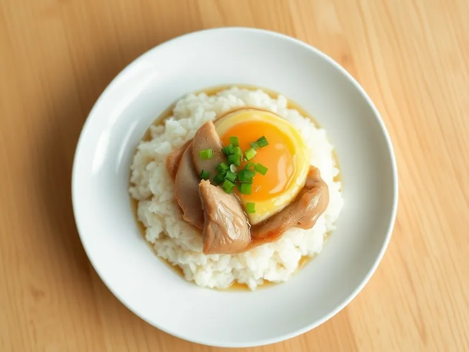

Фото: Иллюстрация ИИ, Cloudflare Workers AI
Оякодон - рис с курицей и яйцом по-японски
Курица с луком в сладком соевом соусе под нежным яйцом на вчерашнем рисе
25 мин2 порц.713 ккал на порциюБ 44 · Ж 29 · У 67Азиатская кухня
Продукты на 2 порц.
- Рис варёный (остался)400 г
- Куриные бёдра2,5 шт
- Лук репчатый1 шт
- Яйцо куриное3 шт
- Соевый соус2 ст. л.
- Сахар2 ч. л.
- Вода120 мл
- Зелёный лук по желаниюпо вкусу
Как готовить
- Нарежьте курицу кусочками 2-3 см, лук тонкими полукольцами, 4 минуты.
- Смешайте в сковороде воду, соевый соус и сахар, доведите до кипения на среднем огне.
- Выложите лук и курицу, тушите на среднем огне 8-10 минут, переворачивая, пока курица не побелеет внутри, а лук не станет мягким.
- Пока курица тушится, разогрейте рис в микроволновке 2 минуты с ложкой воды и разложите по мискам.
- Слегка взбейте яйца, влейте поверх курицы, накройте крышкой и держите на слабом огне 2-3 минуты, пока яйцо не схватится.
- Выложите курицу с яйцом и соусом на рис, посыпьте зелёным луком.
Совет. Не перемешивайте яйцо в сковороде: оно должно лечь одним мягким слоем. Если любите плотнее, держите под крышкой на минуту дольше.